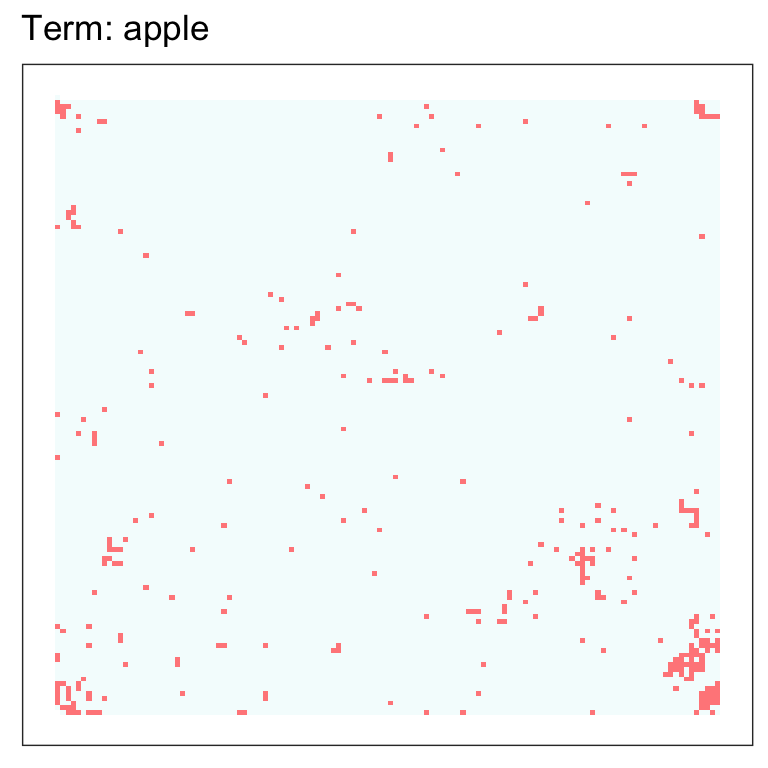
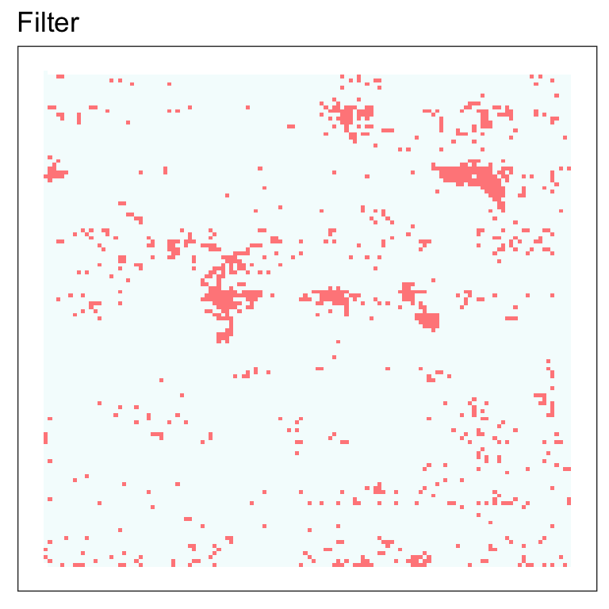
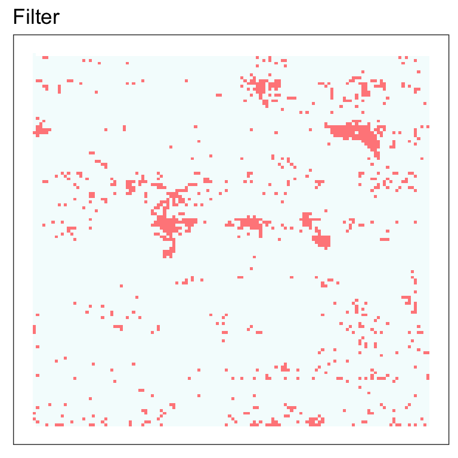

All objects with a semantic fingerprint can be plotted. For example:
suppressPackageStartupMessages(library(sfutils))
#> No cortical key registered. Execute 'Sys.setenv('CORTICAL_API_KEY' = '<your-key>')' to set your credentials.
library(ggplot2)
# Take a company description
data("company_descriptions")
unilever <- do_fingerprint_document(company_descriptions$unilever$desc)
ahold <- do_fingerprint_document(company_descriptions$ahold$desc)
# Fingerprint a term
trm <- do_fingerprint_term("apple")
# Fingerprint an expression
exp <- list(
# Named operator
"sub" = list( # ... whose value is a list
list("term" = "apple"), # ... each element has its own list.
list("text" = "Mac OS is a series of graphical user interface-based operating systems developed by Apple Inc. for their Macintosh line of computer systems.")
)
)
expr <- do_fingerprint_expression(exp)
# Create a category filter
filt <- do_create_filter(
"crude",
positive = c(
"Petroleum is a naturally occurring, yellow-to-black liquid found in geological formations beneath the Earth's surface. It is commonly refined into various types of fuels. Components of petroleum are separated using a technique called fractional distillation i.e. separation of a liquid mixture into fractions differing in boiling point by means of distillation, typically using a fractionating column.",
"Gasoline (American English), or petrol (British English), is a transparent, petroleum-derived liquid that is used primarily as a fuel in spark-ignited internal combustion engines. It consists mostly of organic compounds obtained by the fractional distillation of petroleum, enhanced with a variety of additives. On average, a 42-gallon barrel of crude oil (159 L) yields about 19 US gallons (72 L) of gasoline when processed in an oil refinery, though this varies based on the crude oil source's assay."
)
)
# Plot
plot(unilever) + ggtitle("unilever")
plot(trm) + ggtitle("Term: apple")
plot(expr) + ggtitle("Expression")
plot(filt) + ggtitle("Filter") 

You can pass two fingerprints to plot() to visually compare the two fingerprints
plot(ahold, unilever) + ggtitle("Ahold (red) v. Unilever (black)")
#> Fingerprints share 16.17 percent overlapFor terms and expressions, you can retrieve the context and terms, and plot these.
trm_cont <- get_context(trm)
trm_terms <- get_similar_terms(trm)
expr_cont <- get_context(expr)
expr_terms <- get_similar_terms(expr)
plot(trm, contexts = trm_cont) + ggtitle("term context")
plot(trm, terms = trm_terms) + ggtitle("term similar terms")
plot(expr, contexts = expr_cont) + ggtitle("expression context")
plot(expr, terms = expr_terms) + ggtitle("expression similar terms")